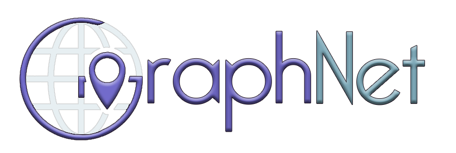

<mat-sidenav-container class="sidenav-container">
  <mat-sidenav-content>
    <mat-toolbar class="toolbar">
      <button
        type="button"
        aria-label="Toggle sidenav"
        mat-icon-button
        (click)="drawer.toggle()"
        *ngIf="isHandset$ | async">
        <mat-icon aria-label="Side nav toggle icon">menu</mat-icon>
      </button>
      <span></span>
      <span><button mat-button class="toolbar-options">Quem Somos?</button></span>
      <span><button mat-button class="toolbar-options">Contato</button></span>
      <span><button mat-button class="toolbar-options">Análises de Provedores</button></span>
      <span class="fill"></span>
      <span><button mat-button class="toolbar-cadastro">Cadastre-se!</button></span>
    </mat-toolbar>
    <!-- Add Content Here -->
  </mat-sidenav-content>
</mat-sidenav-container>
